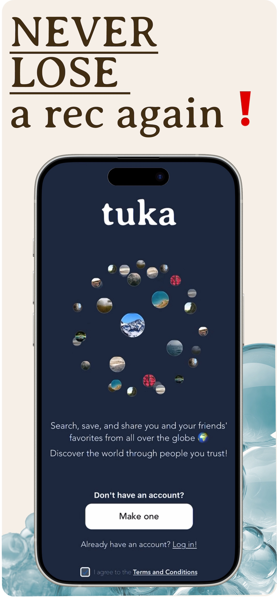
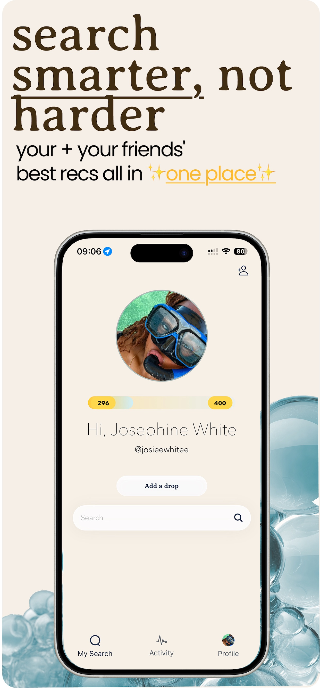
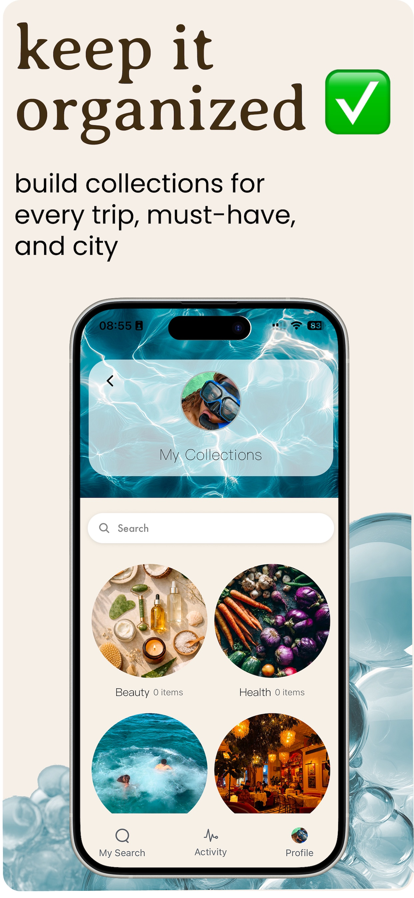
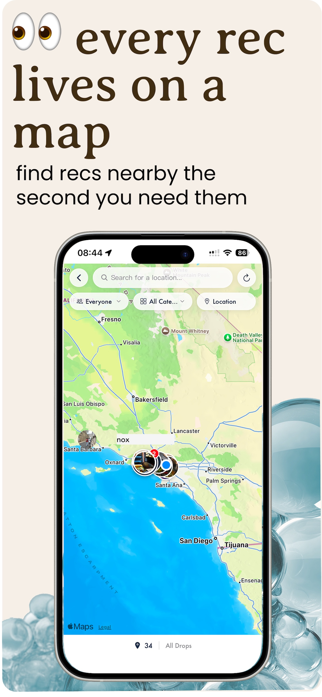
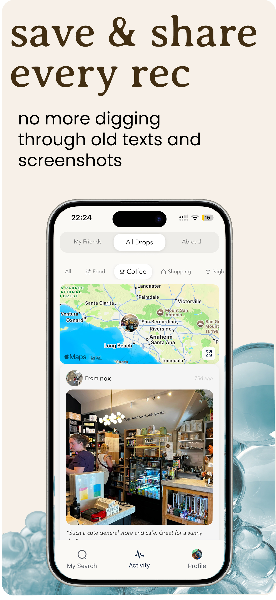
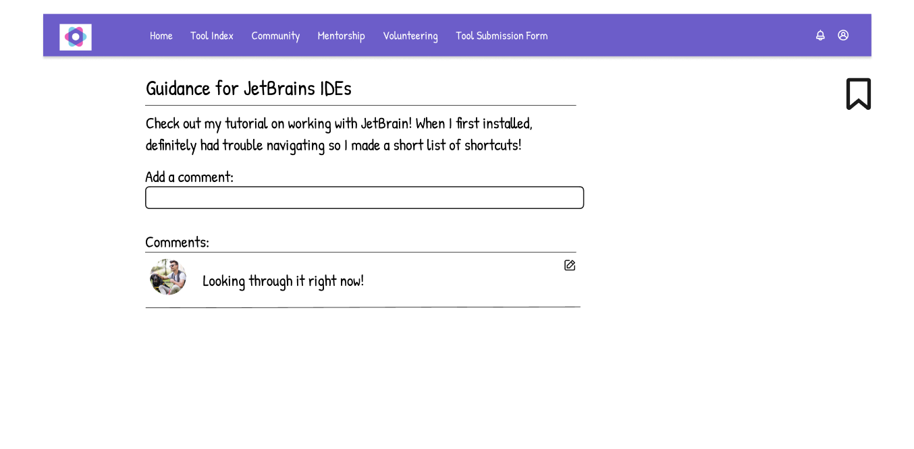

Experience
Tuka (formerly The Circle: Social Search)





Making information-seeking simple, not convoluted with ads and marketing.
Juni Learning — Computer Science Instructor
Oct 2023 – Mar 2025. Taught 20+ students algorithms, data structures, and Python — from foundational sorting to confident algorithmic problem-solving.
Backrs — QA Intern & Coach
QA Intern (Nov 2022 – Feb 2023) and current Coach. Developed and executed unit tests to ensure software quality, and now guide students through the college and graduate application process.
Research
Designing a community for Blind and low-vision software professionals(BLVSPs)
In previous research, BLVSPs expressed distress with the lack of a centralized community for them to share and discover DIY tools, tips, and tricks for better accessible software development, my team and I surveyed and designed this platform to accomdate their considerations.
Users indicated a desire for community, hence our high fidelity design of a chat interface for each DIY tool posted. Currently, we are in the prototyping cycle and are iterating based on user feedback. Come back later for more pages!

Publications
“It's trained by non-disabled people”: Evaluating How Image Quality Affects Product Captioning with Vision-Language Models
ACM CHI 2026 — Best Paper Honourable Mention (top 5% of accepted papers)
CHI is the premier conference for Human-Computer Interaction
Hold the Code
Writing about technology, accessibility, and the humans behind it all.
Technical Projects
SlackA11y
Currently researching sonification and end-user scripting in order to make sense making within chat applications(in this case Slack) more effective for blind users.

Minerva
Named after the goddess of Wisdom, "Minerva" is an innovative chatbot advisor utilizing Google Gemini, designed to enhance user interaction by leveraging a dynamic knowledge base of user preferences and past interactions. My team and I formulated strategies for data pruning and summarization to optimize storage with ChromaDB and retrieval processes, ensuring quick response times and relevance in user interactions.

Cooking Voice-Assistant
Implemented a variety of Natural Language Processing techniques such as preprocessing, parsing, regular expressions, and Frame-Theory in order to create a voice cooking assistant.
Contact Me
Feel free to reach out with any comments or suggestions!
-
Email
dwaynem@uci.edu -
Phone
(901) 485-7771 -
Additional Links